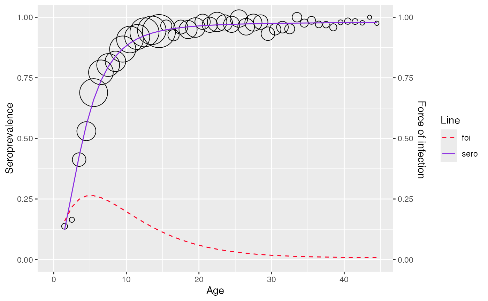

Parametric Bayesian framework
Currently, serosv only has models under parametric
Bayesian framework
Proposed approach
Prevalence has a parametric form \(\pi(a_i, \alpha)\) where \(\alpha\) is a parameter vector
One can constraint the parameter space of the prior distribution \(P(\alpha)\) in order to achieve the desired monotonicity of the posterior distribution \(P(\pi_1, \pi_2, ..., \pi_m|y,n)\)
Where:
- \(n = (n_1, n_2, ..., n_m)\) and \(n_i\) is the sample size at age \(a_i\)
- \(y = (y_1, y_2, ..., y_m)\) and \(y_i\) is the number of infected individual from the \(n_i\) sampled subjects
Farrington
Refer to Chapter 10.3.1
Proposed model
The model for prevalence is as followed
\[ \pi (a) = 1 - exp\{ \frac{\alpha_1}{\alpha_2}ae^{-\alpha_2 a} + \frac{1}{\alpha_2}(\frac{\alpha_1}{\alpha_2} - \alpha_3)(e^{-\alpha_2 a} - 1) -\alpha_3 a \} \]
For likelihood model, independent binomial distribution are assumed for the number of infected individuals at age \(a_i\)
\[ y_i \sim Bin(n_i, \pi_i), \text{ for } i = 1,2,3,...m \]
The constraint on the parameter space can be incorporated by assuming truncated normal distribution for the components of \(\alpha\), \(\alpha = (\alpha_1, \alpha_2, \alpha_3)\) in \(\pi_i = \pi(a_i,\alpha)\)
\[ \alpha_j \sim \text{truncated } \mathcal{N}(\mu_j, \tau_j), \text{ } j = 1,2,3 \]
The joint posterior distribution for \(\alpha\) can be derived by combining the likelihood and prior as followed
\[ P(\alpha|y) \propto \prod^m_{i=1} \text{Bin}(y_i|n_i, \pi(a_i, \alpha)) \prod^3_{i=1}-\frac{1}{\tau_j}\text{exp}(\frac{1}{2\tau^2_j} (\alpha_j - \mu_j)^2) \]
-
Where the flat hyperprior distribution is defined as followed:
\(\mu_j \sim \mathcal{N}(0, 10000)\)
\(\tau^{-2}_j \sim \Gamma(100,100)\)
The full conditional distribution of \(\alpha_i\) is thus \[ P(\alpha_i|\alpha_j,\alpha_k, k, j \neq i) \propto -\frac{1}{\tau_i}\text{exp}(\frac{1}{2\tau^2_i} (\alpha_i - \mu_i)^2) \prod^m_{i=1} \text{Bin}(y_i|n_i, \pi(a_i, \alpha)) \]
Fitting data
To fit Farrington model, use
hierarchical_bayesian_model() and define
type = "far2" or type = "far3" where
type = "far2"refers to Farrington model with 2 parameters (\(\alpha_3 = 0\))type = "far3"refers to Farrington model with 3 parameters (\(\alpha_3 > 0\))
df <- mumps_uk_1986_1987
model <- hierarchical_bayesian_model(df, type="far3")
#>
#> SAMPLING FOR MODEL 'fra_3' NOW (CHAIN 1).
#> Chain 1:
#> Chain 1: Gradient evaluation took 0.000129 seconds
#> Chain 1: 1000 transitions using 10 leapfrog steps per transition would take 1.29 seconds.
#> Chain 1: Adjust your expectations accordingly!
#> Chain 1:
#> Chain 1:
#> Chain 1: Iteration: 1 / 5000 [ 0%] (Warmup)
#> Chain 1: Iteration: 500 / 5000 [ 10%] (Warmup)
#> Chain 1: Iteration: 1000 / 5000 [ 20%] (Warmup)
#> Chain 1: Iteration: 1500 / 5000 [ 30%] (Warmup)
#> Chain 1: Iteration: 1501 / 5000 [ 30%] (Sampling)
#> Chain 1: Iteration: 2000 / 5000 [ 40%] (Sampling)
#> Chain 1: Iteration: 2500 / 5000 [ 50%] (Sampling)
#> Chain 1: Iteration: 3000 / 5000 [ 60%] (Sampling)
#> Chain 1: Iteration: 3500 / 5000 [ 70%] (Sampling)
#> Chain 1: Iteration: 4000 / 5000 [ 80%] (Sampling)
#> Chain 1: Iteration: 4500 / 5000 [ 90%] (Sampling)
#> Chain 1: Iteration: 5000 / 5000 [100%] (Sampling)
#> Chain 1:
#> Chain 1: Elapsed Time: 15.482 seconds (Warm-up)
#> Chain 1: 21.15 seconds (Sampling)
#> Chain 1: 36.632 seconds (Total)
#> Chain 1:
#> Warning: There were 838 divergent transitions after warmup. See
#> https://mc-stan.org/misc/warnings.html#divergent-transitions-after-warmup
#> to find out why this is a problem and how to eliminate them.
#> Warning: Examine the pairs() plot to diagnose sampling problems
#> Warning: The largest R-hat is 1.14, indicating chains have not mixed.
#> Running the chains for more iterations may help. See
#> https://mc-stan.org/misc/warnings.html#r-hat
#> Warning: Bulk Effective Samples Size (ESS) is too low, indicating posterior means and medians may be unreliable.
#> Running the chains for more iterations may help. See
#> https://mc-stan.org/misc/warnings.html#bulk-ess
#> Warning: Tail Effective Samples Size (ESS) is too low, indicating posterior variances and tail quantiles may be unreliable.
#> Running the chains for more iterations may help. See
#> https://mc-stan.org/misc/warnings.html#tail-ess
model$info
#> mean se_mean sd 2.5%
#> alpha1 1.408781e-01 1.096470e-03 6.583110e-03 1.285038e-01
#> alpha2 1.995220e-01 9.879167e-04 8.615884e-03 1.836674e-01
#> alpha3 7.466994e-03 3.924748e-04 6.897456e-03 4.472780e-04
#> tau_alpha1 3.118564e-01 9.967545e-02 7.708859e-01 3.921300e-06
#> tau_alpha2 7.333867e-01 1.487363e-01 1.792088e+00 5.903764e-06
#> tau_alpha3 2.633947e+00 1.643591e+00 5.143803e+00 2.944859e-06
#> mu_alpha1 1.554005e+00 1.935997e+00 3.849420e+01 -9.265843e+01
#> mu_alpha2 6.597082e+00 2.973981e+00 3.641011e+01 -6.704919e+01
#> mu_alpha3 2.852824e+00 4.456617e+00 4.146922e+01 -9.728614e+01
#> sigma_alpha1 9.035379e+01 2.183061e+01 7.215499e+02 5.752691e-01
#> sigma_alpha2 6.576310e+01 1.425332e+01 3.635106e+02 3.671380e-01
#> sigma_alpha3 9.407694e+01 2.504552e+01 8.046322e+02 2.224100e-01
#> lp__ -2.534384e+03 6.344957e-01 4.222197e+00 -2.542987e+03
#> 25% 50% 75% 97.5%
#> alpha1 1.357578e-01 1.412377e-01 1.463428e-01 0.1512404
#> alpha2 1.934689e-01 1.996487e-01 2.063040e-01 0.2170242
#> alpha3 3.152994e-03 4.954288e-03 9.662025e-03 0.0267386
#> tau_alpha1 9.859920e-04 7.117460e-03 1.271444e-01 3.0217457
#> tau_alpha2 4.173289e-04 3.002324e-02 3.368339e-01 7.4189809
#> tau_alpha3 8.832888e-04 4.686090e-02 2.341148e+00 20.2172677
#> mu_alpha1 -4.010137e+00 3.519832e-01 8.508863e+00 95.6694049
#> mu_alpha2 -2.239597e+00 3.401933e-01 8.064976e+00 95.5871103
#> mu_alpha3 -1.991155e+00 1.183101e-02 3.071295e+00 105.8255113
#> sigma_alpha1 2.804474e+00 1.185325e+01 3.184731e+01 505.0026217
#> sigma_alpha2 1.723029e+00 5.771268e+00 4.895091e+01 411.5637679
#> sigma_alpha3 6.535602e-01 4.619497e+00 3.364724e+01 582.7640733
#> lp__ -2.537377e+03 -2.534227e+03 -2.531187e+03 -2526.3895654
#> n_eff Rhat
#> alpha1 36.046964 1.076246
#> alpha2 76.060465 1.050501
#> alpha3 308.854674 1.000146
#> tau_alpha1 59.814121 1.001727
#> tau_alpha2 145.172619 1.002282
#> tau_alpha3 9.794474 1.129788
#> mu_alpha1 395.349388 1.005220
#> mu_alpha2 149.888196 1.001482
#> mu_alpha3 86.584668 1.000960
#> sigma_alpha1 1092.448366 1.001546
#> sigma_alpha2 650.431856 1.000082
#> sigma_alpha3 1032.130451 1.005289
#> lp__ 44.281239 1.034539
plot(model)
#> Warning: No shared levels found between `names(values)` of the manual scale and the
#> data's fill values.
Log-logistic
Proposed approach
The model for seroprevalence is as followed
\[ \pi(a) = \frac{\beta a^\alpha}{1 + \beta a^\alpha}, \text{ } \alpha, \beta > 0 \]
The likelihood is specified to be the same as Farrington model (\(y_i \sim Bin(n_i, \pi_i)\)) with
\[ \text{logit}(\pi(a)) = \alpha_2 + \alpha_1\log(a) \]
- Where \(\alpha_2 = \text{log}(\beta)\)
The prior model of \(\alpha_1\) is specified as \(\alpha_1 \sim \text{truncated } \mathcal{N}(\mu_1, \tau_1)\) with flat hyperprior as in Farrington model
\(\beta\) is constrained to be positive by specifying \(\alpha_2 \sim \mathcal{N}(\mu_2, \tau_2)\)
The full conditional distribution of \(\alpha_1\) is thus
\[ P(\alpha_1|\alpha_2) \propto -\frac{1}{\tau_1} \text{exp} (\frac{1}{2 \tau_1^2} (\alpha_1 - \mu_1)^2) \prod_{i=1}^m \text{Bin}(y_i|n_i,\pi(a_i, \alpha_1, \alpha_2) ) \]
And \(\alpha_2\) can be derived in the same way
Fitting data
To fit Log-logistic model, use
hierarchical_bayesian_model() and define
type = "log_logistic"
df <- rubella_uk_1986_1987
model <- hierarchical_bayesian_model(df, type="log_logistic")
#>
#> SAMPLING FOR MODEL 'log_logistic' NOW (CHAIN 1).
#> Chain 1:
#> Chain 1: Gradient evaluation took 5.8e-05 seconds
#> Chain 1: 1000 transitions using 10 leapfrog steps per transition would take 0.58 seconds.
#> Chain 1: Adjust your expectations accordingly!
#> Chain 1:
#> Chain 1:
#> Chain 1: Iteration: 1 / 5000 [ 0%] (Warmup)
#> Chain 1: Iteration: 500 / 5000 [ 10%] (Warmup)
#> Chain 1: Iteration: 1000 / 5000 [ 20%] (Warmup)
#> Chain 1: Iteration: 1500 / 5000 [ 30%] (Warmup)
#> Chain 1: Iteration: 1501 / 5000 [ 30%] (Sampling)
#> Chain 1: Iteration: 2000 / 5000 [ 40%] (Sampling)
#> Chain 1: Iteration: 2500 / 5000 [ 50%] (Sampling)
#> Chain 1: Iteration: 3000 / 5000 [ 60%] (Sampling)
#> Chain 1: Iteration: 3500 / 5000 [ 70%] (Sampling)
#> Chain 1: Iteration: 4000 / 5000 [ 80%] (Sampling)
#> Chain 1: Iteration: 4500 / 5000 [ 90%] (Sampling)
#> Chain 1: Iteration: 5000 / 5000 [100%] (Sampling)
#> Chain 1:
#> Chain 1: Elapsed Time: 4.359 seconds (Warm-up)
#> Chain 1: 4.504 seconds (Sampling)
#> Chain 1: 8.863 seconds (Total)
#> Chain 1:
#> Warning: There were 481 divergent transitions after warmup. See
#> https://mc-stan.org/misc/warnings.html#divergent-transitions-after-warmup
#> to find out why this is a problem and how to eliminate them.
#> Warning: Examine the pairs() plot to diagnose sampling problems
#> Warning: Bulk Effective Samples Size (ESS) is too low, indicating posterior means and medians may be unreliable.
#> Running the chains for more iterations may help. See
#> https://mc-stan.org/misc/warnings.html#bulk-ess
#> Warning: Tail Effective Samples Size (ESS) is too low, indicating posterior variances and tail quantiles may be unreliable.
#> Running the chains for more iterations may help. See
#> https://mc-stan.org/misc/warnings.html#tail-ess
model$type
#> [1] "log_logistic"
plot(model)
#> Warning: No shared levels found between `names(values)` of the manual scale and the
#> data's fill values.